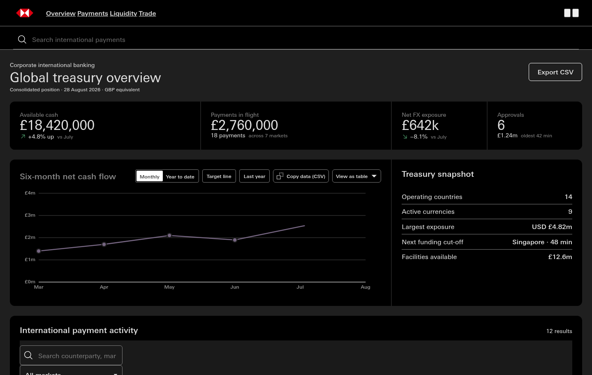
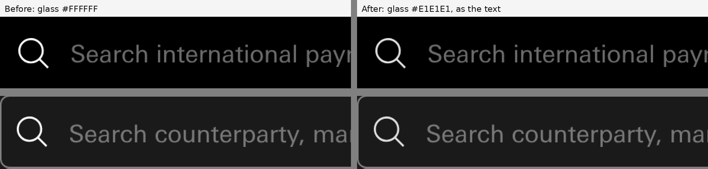
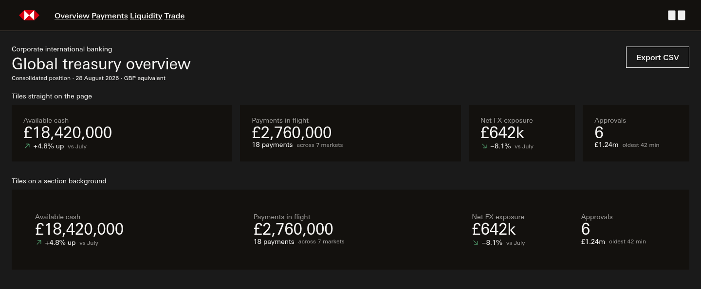
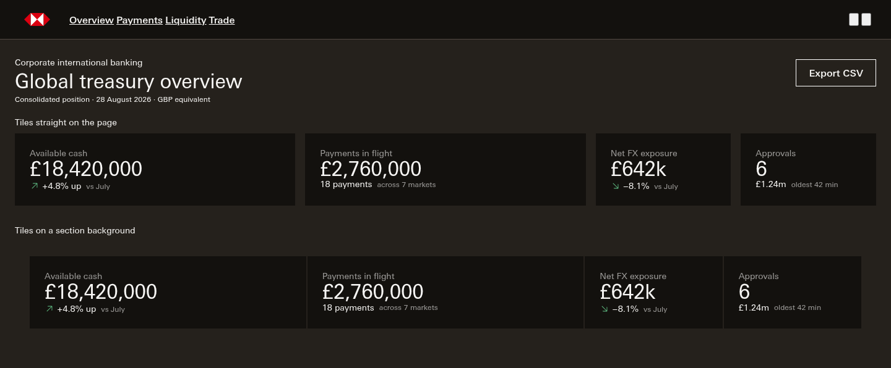

Session 311 · review page · The icons and Supercharge's dark page, built
In dark, the icons now take the same soft white as the text beside them. And Supercharge's dark page and section are its own warm/4, one step up from its tiles, so the tiles stand out on both.
01 · The icons follow the ink · built, does it stand?
"the icons should follow the ink colour"
On the banking demo two icons were still pure white: the search glass in the header search bar and the one in the payments toolbar. Both now match the text. Pure white icons on the demo: 2 before, 0 after, in each of the three themes. Supercharge's icons were already its own #F7F6F4 and have not moved.
The top of the banking demo at 1440, Console dark, with the header search bar open. Left is before, right is after.

The two search glasses next to their words, enlarged four times. Top is the header search bar, bottom is the payments toolbar.

Mono and Common move the same way: the same two glasses, #FFFFFF to #E1E1E1, 2 to 0 in Mono and 2 to 0 in Common (measured, not pictured, because the pictures look the same as Console's).
Does it stand?
knowledge/tokens/semantic-colour.json icon/default dark aliases color/neutral/12 #E1E1E1 (was color/neutral/15 #FFFFFF), with a note quoting the ruling. Supercharge's DNA tier would have rebound that to warm/12 #CDC8C6, so themes/apollo-supercharge.overrides.json pins icon/default to warm/15 #F7F6F4 dark (light restated warm/2 #13110E), the same as its text/default.--icon / --nav-icon follows by projection (they bind icon/default). Not moved, by scope: icon/default-reverse, icon/on-inverse, --pri-icon and --pri-glyph (icons on the primary and red fills), button/primary/icon/default in Common, and the hard-coded dark RAG roundel rule .ic{color:#FFFFFF} in Notifications, Input fields, Amount input, Combobox, Date picker, Date range picker, File upload, Form layout and Multi-select.--icon-default: #FFFFFF → #E1E1E1 in the base dark block. Console and Common inherit it; neither overrides icon/default.<svg> outside the chart canvas; pure white = a shape in it filled or stroked #FFFFFF); contrast is against the ground the glass sits on:| Theme, dark | Icons drawn | Pure white before | Pure white after | Header glass before → after | Toolbar glass before → after | Text ink |
|---|---|---|---|---|---|---|
| Mono | 8 | 2 | 0 | #FFFFFF · 21.00 → #E1E1E1 · 16.06 | #FFFFFF · 17.40 → #E1E1E1 · 13.31 | #E1E1E1 |
| Console | 8 | 2 | 0 | #FFFFFF · 21.00 → #E1E1E1 · 16.06 | #FFFFFF · 17.40 → #E1E1E1 · 13.31 | #E1E1E1 |
| Common | 8 | 2 | 0 | #FFFFFF · 21.00 → #E1E1E1 · 16.06 | #FFFFFF · 17.40 → #E1E1E1 · 13.31 | #E1E1E1 |
| Supercharge | 8 | 0 | 0 | #F7F6F4 · 17.45 → #F7F6F4 · 17.45 | #F7F6F4 · 16.11 → #F7F6F4 · 14.81 | #F7F6F4 |
notes/_lanes/311/B/render_311B.py count|icons (before = canon.css at 84bd8c93 served to a copy of the demo; after = the tree), facts img/facts-count.json.02 · Supercharge's dark page · built, does it stand?
"Supercharge's dark page and section take warm/4 #25211C, one step up from its tile"
Tiles now stand out on the page and on a section background by 1.18 to 1, as they do in Mono. Before, they sat 1.08 to 1 on a plain grey page and disappeared into the section (1.00 to 1). Text on the page reads 14.81 to 1.
A Supercharge page at 1440, dark, built from the banking demo's own header, title and metric tiles: first straight on the page, then on a section background.


Does it stand?
knowledge/canon/gen_theme_cascade.py _expand_aliases skipped any path already written (if path in ov: continue), so background/default, written in the pass where only its light target was overridden, kept the Mono base #1A1A1A for dark and was never revisited once surface/digital-black expanded. It now skips only the theme's own overrides and re-derives expanded paths until the fixed point. The generator's selftest gains a probe (a theme overriding only the two ladder steps must reach both legs of background/default); with the old line put back the selftest fails, so the clause is load-bearing. On its own the fix gives Supercharge's page #13110E, the tile colour.themes/apollo-supercharge.overrides.json: background/default and surface/section dark alias color/warm/4 #25211C (light restated: warm/15 #F7F6F4 and warm/13 #DFDEDC, as rendered before). surface/raised dark stays warm/2 #13110E. The selftest checks both values. surface/digital-black's note no longer says "SC dark page = warm/4": Supercharge's digital black is warm/2 #13110E, and its page is background/default, pinned by this ruling.--background-default and --surface-section → #25211C, and the component seats that project the page: --page ×135, --menu-surface ×10, --cell ×6, --surface ×4, --nav-page ×3, --tbl-cell ×2, --panel, --pane, --stack-ring, --qr-plate-theme (all #1A1A1A → #25211C), and Template-dashboard-bento's --wall-ground #13110E → #25211C. Supercharge light, Mono, Console, Common and the grey-tile option blocks: no change.| Supercharge dark | Page | Section | Tile | Header band | Tile on page | Tile on section | Text on page | Text on tile |
|---|---|---|---|---|---|---|---|---|
| Before | #1A1A1A | #13110E | #13110E | #13110E | 1.08 | 1.00 | 16.11 | 17.45 |
| After | #25211C | #25211C | #13110E | #13110E | 1.18 | 1.18 | 14.81 | 17.45 |
notes/_lanes/311/B/sc-page.html, the banking demo's masthead, page header and metric tiles copied verbatim, linked to the real canon.css with no overrides; the section is --surface-section, the tile --surface-raised. Driver render_311B.py scpage, facts img/facts-scpage.json.03 · Anything else
Anything else on this page?